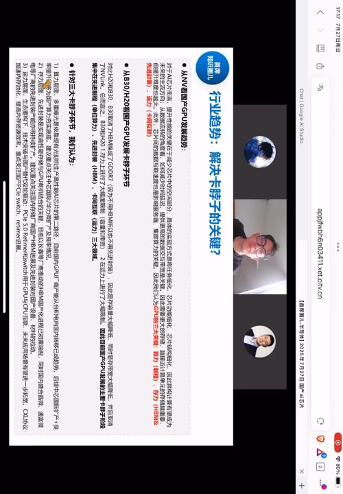
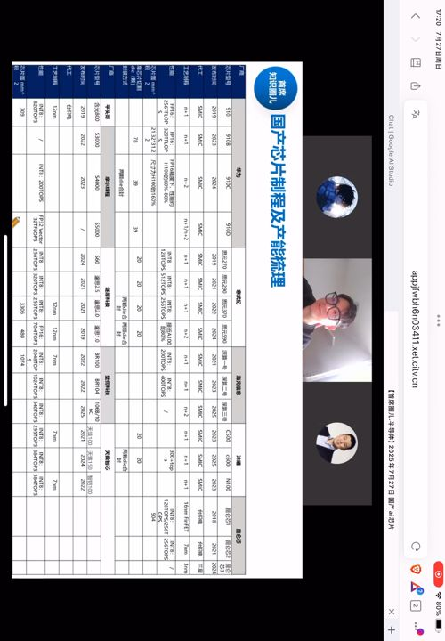
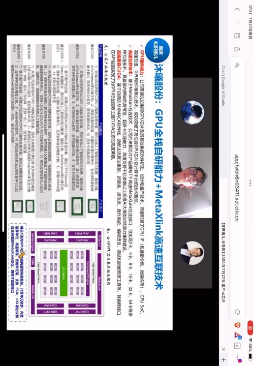

一、背景：底部反弹，国产算力最受益
半导体板块自 Q1 中芯交流会上业绩指引下调、先进制程扩产受阻后调整了约 4 个月，成交量处于历史分位数最底部。这波底部反弹，最集中受益的就是国产 AI 芯片（对标英伟达 H100 等）。
二、需求空间：一年 300 万张卡
- 阿里规划未来三年投 3800 亿于云计算与 AI 基础设施（超过去十年总和）；字节每年近 1000 亿，26 财年约 1600 亿、其中 900 亿用于 AI 算力采购；运营商也提升算力投资占比。
- 测算：以阿里云 2026 财年 1200 亿资本开支、近 500 亿买算力卡为例，若采购 H20（单卡约 1.22 万美金）需 50 万张——国产卡更便宜，需求更大。
- 互联网厂商一年需 200 多万张，加政府项目（一体机）100 多万张，全国每年 AI 算力卡需求 300 万张以上，对应约 400 亿美金市场。
国产化不可逆：H100（2022）→ H20 阉割版（去年）→ 今年 4 月无限期禁售 → 7 月虽解禁，但中国商务部明确"国产化进程不可逆"，叠加反垄断调查、数据本地化、政府不采购受限卡等措施。
三、政企与云厂的供应链格局
- 政企（运营商、地方政府）：以国产卡为主，昇腾市占率最高；海光、沐曦、摩尔线程、燧原等拿部分订单；寒武纪因产能原因今年政企做得不多。
- 云厂：过去以 NV 为主，供应不稳定后转向国产卡。阿里对国产卡包容（与华为云冲突，优先寒武纪/海光/沐曦）；字节深度绑定寒武纪（同在海淀区）；腾讯过去保守，4 月后开始找寒武纪/昇腾/沐曦/海光；百度自有昆仑芯，小批量采购海光。
四、NPU 还是 GPU
国内 AI 公司是被需求爆发"推上来"做国产替代，没有英伟达/AMD 数十年积累。昇腾 910B/C、寒武纪思元 590/690 多走 NPU/ASIC 架构。
- GPU：从图形渲染加速延伸到通用计算（GPGPU），生态完善（CUDA）、灵活，但难做专用性能极致。
- NPU/ASIC：为 AI 量身定制，硬件设计高度专用化、性能好、成本低；但生态差、指令集专用、迁移成本高，开发者要重学新架构。
- 判断：短期 NPU 能更快满足硬指标性能、解决燃眉之急；长期是 NPU 与 GPU 共存，不是 NPU 路线错了会被颠覆。
五、三大卡脖子：算力、存力、运力

- 算力：最大关键，卡在中芯/华虹的先进制程产能（N+2≈7nm）。
- 存力：HBM 提高带宽，是兵家必争之地，重要性逐渐超过算力；要靠 Chiplet 堆叠 + CoWoS 先进封装把 GPU 与 HBM 合封。
- 运力：PCIe 接口类芯片，Retimer 尤其 Switch；目前主要博通在做，一颗 Switch 卖 3 万美金，价值量不输 GPU/HBM；国内 Retimer 有南企、盛科通信，PCIe Switch 还少。
六、玩家与 N+2 产能分配

台积电不让代工 7nm 以上，主要玩家转国内中芯。中芯 N+1≈14nm（产能够用）、N+2≈7nm（极度紧缺）。真正能在 N+2 拿到产能的只有四家：华为、寒武纪、海光、昆仑芯；沐曦、摩尔线程的 N+2 流片排单要到明年。
N+2 产能分配（约 2.5 万片/月）：其中 2 万片给 SoC 小芯片（麒麟等），真正给大算力 AI 芯片的不到 5000 片/月——昇腾拿 3000 多片、寒武纪约 1000 片、海光和昆仑芯各两三百片，其他厂商基本拿不到。本来规划年底大芯片扩到 1 万片，因 Q1/Q2 国产材料与海外设备调试不顺，预计年底先到 7000–8000 片。一片 12 英寸晶圆按 N+2 良率 30%（波动 20%）只能切 15–20 颗大芯片，是当前供给侧的硬约束。
七、第二梯队：沐曦 vs 摩尔线程

- 沐曦：GPU 全栈自研（从 0 到 1 积累大量 GPU IP、互联 IP），X-MetaLink 互联支持 2–64 卡拓扑、训练千亿参数模型；软件栈 MACA 高度兼容 CUDA，迁移成本低；AMD 核心团队班底。主流 C550，C600 在中芯排片、明年可见；采购 HBM2E。目前主要政企订单，互联网厂只送了小几百颗。
- 摩尔线程：全能型 GPU，PC 显卡 + AI 计算 + 桌面图形 + SOC 一起走；自研 MUSA 生态（从零构建但兼容 CUDA 降低迁移成本）；英伟达中国团队为核心、团队更多元；显存用 GDDR6X。今年 AI 收入不大，仍以 PC 端为主。
结论：国产 AI 芯片的核心矛盾在供给侧——先进制程产能（中芯 N+2）与 CoWoS 先进封装；短期看昇腾/寒武纪/海光/昆仑芯四家拿产能，第二梯队沐曦、摩尔线程要等明年 N+2 流片。长期关注 HBM（存力）与 PCIe Switch（运力）两个新战场。